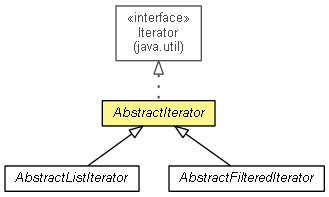

org.eclipse.net4j.util.collection
Class AbstractIterator<T>
java.lang.Object
 org.eclipse.net4j.util.collection.AbstractIterator<T>
org.eclipse.net4j.util.collection.AbstractIterator<T>
- All Implemented Interfaces:
- Iterator<T>
- public abstract class AbstractIterator<T>
- extends Object
- implements Iterator<T>

An abstract base class for custom iterators that only requires to implement a single computeNextElement()
method.
- Since:
- 3.2
| Methods inherited from class java.lang.Object |
clone, equals, finalize, getClass, hashCode, notify, notifyAll, toString, wait, wait, wait |
END_OF_DATA
protected static final Object END_OF_DATA
- The token to be used in
computeNextElement() to indicate the end of the iteration.
AbstractIterator
public AbstractIterator()
hasNext
public final boolean hasNext()
- Specified by:
hasNext in interface Iterator<T>
next
public final T next()
- Specified by:
next in interface Iterator<T>
remove
public void remove()
- Specified by:
remove in interface Iterator<T>
computeNextElement
protected abstract Object computeNextElement()
- Returns the next iteration element, or
END_OF_DATA if the end of the iteration has been reached.
Copyright (c) 2004 - 2011 Eike Stepper (Berlin, Germany) and others.